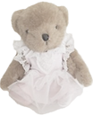
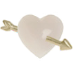

august · 2026
hi there, it's puf ♡
i have gone by different artistic names, but "puf", "fluf" and variations are how i identify with the most right now. soft, cute, and adaptable.
i'm an artist, crafter & designer, and i have been creating multiple cute and comforting multimedia projects ( both digitally & traditionally ) since 2016.
at the beginning, i was approaching the internet through nostalgia, for i have grown deeply affectionate to the internet from the 2000s - it's the digital world i have made my own, and a place where i wanted desperately to belong.
once i became an adult, i decided to make this dream come true through web & game design, so i could create content the way i loved so much during my childhood.
the thing is .. the internet was not the same, by then, and it became more & more different with the years, which caused me to feel deeply stressed out, and over time, depressed.
it's weird, because i was indeed achieving all i wanted
: i had many ongoing passion projects, a thriving website & blog, an online store, an online game, and a loving community of people who supported me, who i could inspire everyday.
but even so, i didn't feel like i belonged .. because it was not the internet i was looking for. it could never be like before, for it was long gone.
i didn't want to have an online presence, because that meant i needed to conform to the modern internet - and i hate it. it hurts me, but i really do !
the modern internet is nothing of what i wished for : the race for the reach, numbers, social media, having to adapt my content to multiple different devices.. oversharing, dodging the dramas, being paid to talk about products - being treated like a product.
i don't want any of it. i just wanted to create cute things, and feel like i was using the family computer in 2008.
i found myself surrounded by all of that i hated, and i couldn't help it, because i was part of it in some way, because i was there, being an "influencer". even when i completely stopped using social media, people still recognized me, tried to reach me and expected things from me - my website, my projects, were in the middle of it. i felt like a small cog in the machinery of the broken digital world.
so, i decided that things needed to change : i said my goodbyes to my online presence as a whole and closed all of my digital platforms, so i could focus on my real life projects, and heal.
then after a whole year of rest, i slowly started anew with a different, more careful approach. something very interesting happened : i found myself enjoying being online, but it was not the same as before ; it was softer, simpler, easier ..
i realized i don't hate the entirety of the modern internet - there is a small percentage of it that still brings me as much joy as when i was a little girl.. ♡
for example, i still deeply enjoy playing games, as much as always. it never gets old, it's always refreshing and i love seeing new things being published.
well yes, i used to run an online game, but i encountered many problems : it was a very social game, deeply rooted and integrated with my websites and other projects, thus being mashed with my internet persona ( and the mentioned issues associated with it ). my other small games were all part of the same big project, so they were carried along with it as well.
it wasn't the ideal approach for what i was looking for. i want the freedom to experiment, without so much pressure to "succeed" at them.
i still crave for designing, for creating digitally - but i cannot repeat the mistake of needing external promotion and social media to keep them active and running, right ?
so, currently, i'm using platforms that can help me go back to creating, this time in a way that is not dependent on my online persona - a reliable and simple approach !
yes i am looking forward to working on cute & comforting digital projects again, but this time, without letting the whole burden fall on me.
i will no longer get involved with things i don't believe in.
my online presence will remain extremely low-profile, and i won't always attach my name to what i create ; that way, i can protect myself ( and my creations ) from potential future issues. i aim to preserve my identity through my visual signature rather than my username, for being able to try different platforms and create freely.
furthermore, i’m not going to try and create everything from scratch anymore, as it’s simply unfeasible in the long run. i will allow myself to work with the available tools, accept help from others, and outsource tasks for which i lack the energy or time, so i can avoid becoming overwhelmed - something i struggled with greatly in the past.
i hope you may continue to support me and my work, in this new format ♡
can you find me.. ?
see you out there !
january · 2025
thank you for everything ..
it's time to say goodbye ♡
as of 2025, i no longer plan on updating this website and my current digital projects.
i am closing this chapter of my life, as i am now focusing on living the beautiful & simple life of my dreams ♡
you see, the internet is no longer the same one i fell in love with when i was a little girl. it is hard to recognize it at times, i feel like i don't belong .. but i hope i still managed to bring you comfort through softness. i tried my best ♡
i'm very proud of my creations, the career i've built - but mostly driven by nostalgia, i feel like i have an open wound that keeps hurting more the more time passes, the more i see the web changing. bland, rough, greedy, artificial.
i'm tired of being pushed, forced to adapt to the new and "better", of changing in order to be accessible, tired of the judgment, of hiding in the corners, glueing the broken pieces, wiping the tears.. it's time to heal, and let go.
this wonderful digital land has become a sweet memory i will forever hold close to my heart.. memories, however, of a time where i could only dream of being as happy as i am today. there is so much more waiting for me !
now, with this message, i hope i can inspire you to make your dream life a reality. if you can't fit in, step outside and keep looking for your happiness. little by little, you can get where you want to be.
you'll still have public access to my current content during the year of 2025.
please feel free to backup everything you find useful !
( keep in mind most of my codes will become obsolete over time and stop working properly )
then, i will close the poofties server, along with my games, platforms, and online store. i will keep the middlepot.com domain as a backup. remember with love.
꒰ thank you for being here with me during this journey ♡ ꒱